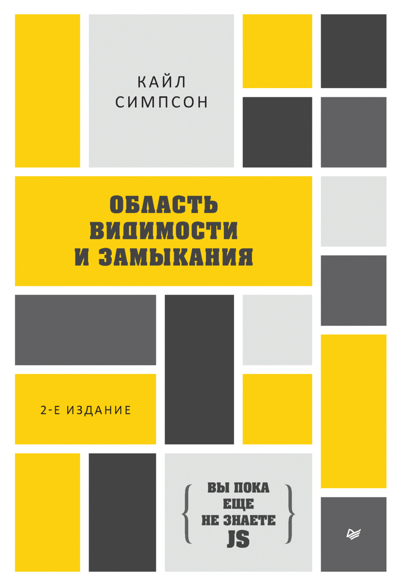

Интерактивная книга · Полка JavaScript
«Область видимости и замыкания» (2-е издание) — легендарное руководство Кайла Симпсона (getify). Фундаментальное понимание работы движка V8, компиляции, лексической области видимости, поднятия (hoisting) и механизма замыканий.